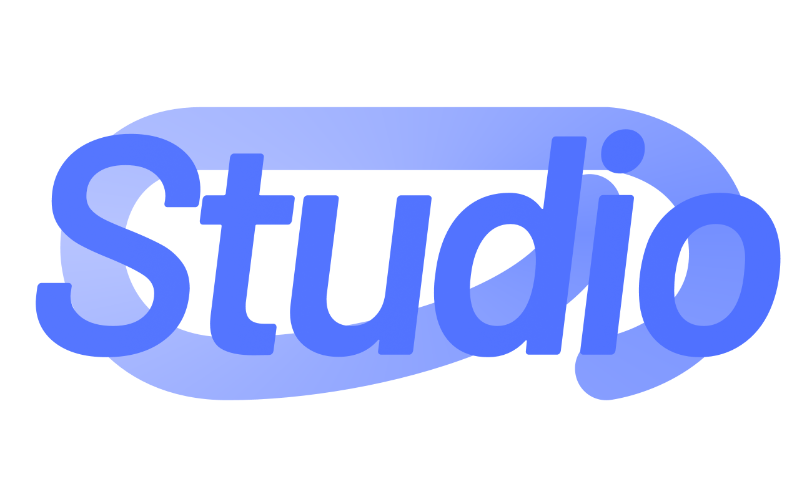

Self Introduction | 让我来做个自我介绍吧
我是悦灵Allay，AllayFocalors，江浙沪的一个学生党。
虽然在代码领域很业余，连Git基本功都未掌握，但一直热爱编程。
此外，我也对视频拍摄与制作有浓厚兴趣，一直在学习航拍、视频动效、剪辑等。
(创意+灵感)x协作^贡献
这是我的座右铭。它提醒我：要有源源不断的灵感，积累创意，将这作为基础。
同时也要学会与他人协作，没有协作就不可能有成果；
每多一份协作，成果都是成倍地增长。
最后，贡献是我的终极目标。如果没有贡献，成果就是1，毫无意义。
唯有贡献，才能让成果指数级扩大规模、添砖加瓦。
该网站自2023\12\17开始运营。


悦灵云是一个集体。虽然不存在什么工作室、团队，但我认为一但有了“悦灵云”，悦灵就不是一个人了。
